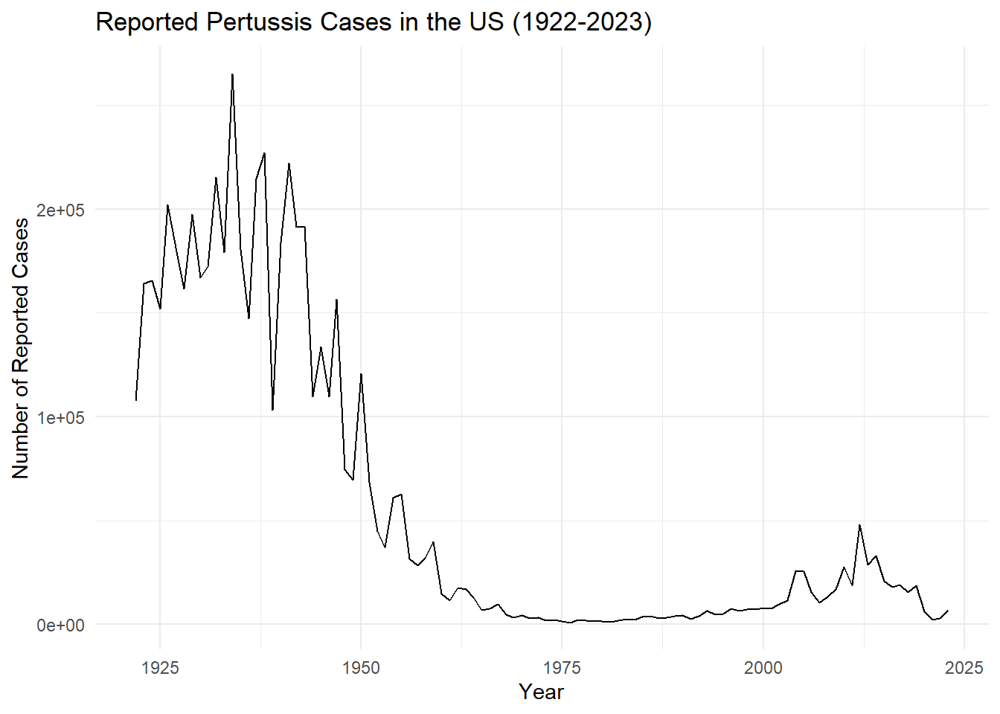
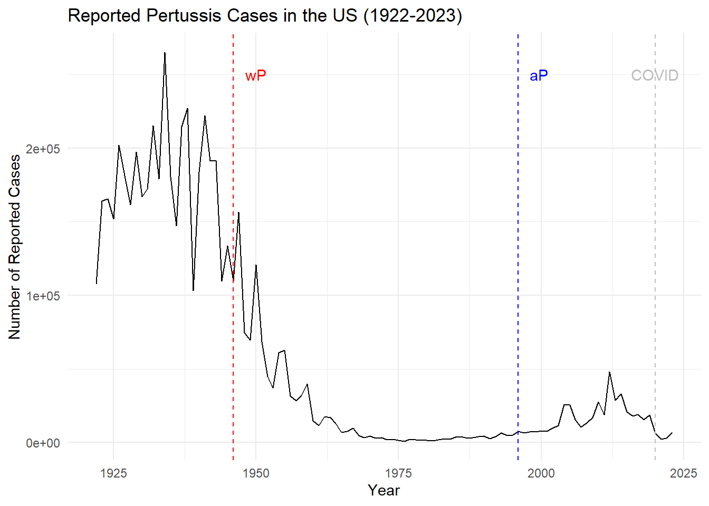
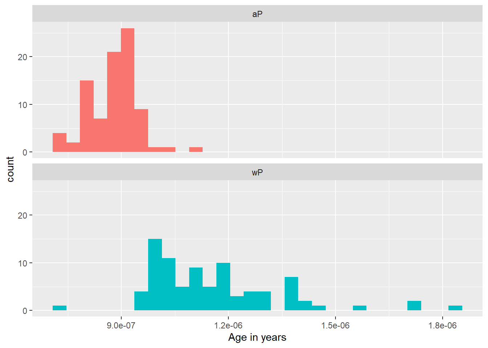
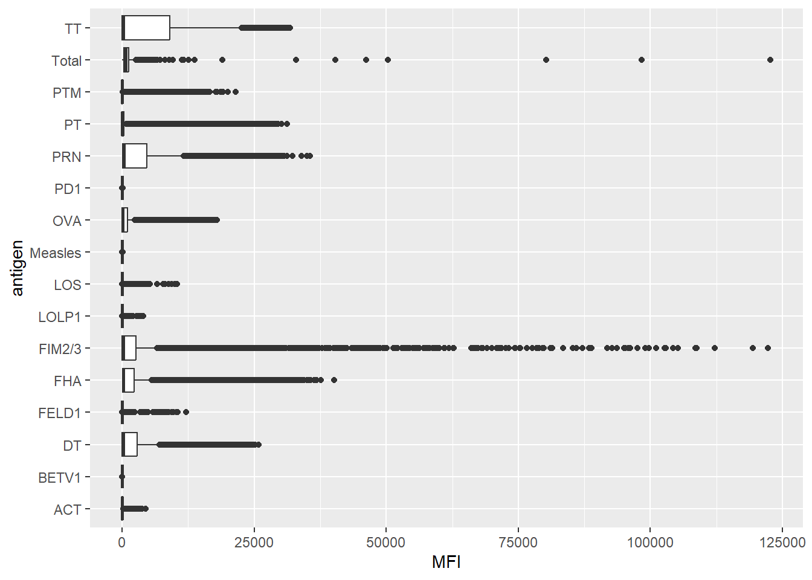

library(ggplot2)
ggplot(cdc) +
geom_line(aes(x = Year, y = No..Reported.Pertussis.Cases)) +
labs(title = "Reported Pertussis Cases in the US (1922-2023)",
x = "Year",
y = "Number of Reported Cases") +
theme_minimal()
###Q1
library(ggplot2)
ggplot(cdc) +
geom_line(aes(x = Year, y = No..Reported.Pertussis.Cases)) +
labs(title = "Reported Pertussis Cases in the US (1922-2023)",
x = "Year",
y = "Number of Reported Cases") +
theme_minimal()
###Q2
ggplot(cdc) +
geom_line(aes(x = Year, y = No..Reported.Pertussis.Cases)) +
labs(title = "Reported Pertussis Cases in the US (1922-2023)",
x = "Year",
y = "Number of Reported Cases") +
theme_minimal() + geom_vline(xintercept = 1946, linetype="dashed",
color = "red", size=.5) +
annotate("text", x = 1950, y = 250000, label = " wP ", color = "red") + geom_vline(xintercept = 1996, linetype="dashed",
color = "blue", size=.5) +
annotate("text", x = 2000, y = 250000, label = "aP ", color = "blue") +geom_vline(xintercept = 2020, linetype="dashed",
color = "gray", size=.5) +
annotate("text", x = 2020, y = 250000, label = " COVID ", color = "gray") Warning: Using `size` aesthetic for lines was deprecated in ggplot2 3.4.0.
ℹ Please use `linewidth` instead.
###Q3 There is gradual increase in pertussis cases after the aP introduction, followed by a few spikes. This is likely due to a growing anti-vaccination movement in the US. It is also due to the fact that aP vaccines do not provide as long-lasting immunity as wP vaccines. The decrease in cases during the COVID-19 pandemic is likely due to social distancing and mask-wearing measures that were implemented to reduce the spread of COVID-19, which also reduced the spread of pertussis.
(library(jsonlite))Warning: package 'jsonlite' was built under R version 4.3.3[1] "jsonlite" "ggplot2" "stats" "graphics" "grDevices" "utils"
[7] "datasets" "methods" "base" subject <- read_json("https://www.cmi-pb.org/api/subject", simplifyVector = TRUE) head(subject, 3) subject_id infancy_vac biological_sex ethnicity race
1 1 wP Female Not Hispanic or Latino White
2 2 wP Female Not Hispanic or Latino White
3 3 wP Female Unknown White
year_of_birth date_of_boost dataset
1 1986-01-01 2016-09-12 2020_dataset
2 1968-01-01 2019-01-28 2020_dataset
3 1983-01-01 2016-10-10 2020_dataset##Q4, Q5, Q6
table(subject$infancy_vac)
aP wP
87 85 table(subject$biological_sex)
Female Male
112 60 table(subject$biological_sex, subject$race)
American Indian/Alaska Native Asian Black or African American
Female 0 32 2
Male 1 12 3
More Than One Race Native Hawaiian or Other Pacific Islander
Female 15 1
Male 4 1
Unknown or Not Reported White
Female 14 48
Male 7 32library(lubridate)Warning: package 'lubridate' was built under R version 4.3.3
Attaching package: 'lubridate'The following objects are masked from 'package:base':
date, intersect, setdiff, unionfor (i in 1:(length(subject$year_of_birth))) {
subject$age_years[i] <- as.numeric(time_length( today() - ymd(subject$year_of_birth[i]), "years"))
}library(dplyr)Warning: package 'dplyr' was built under R version 4.3.3
Attaching package: 'dplyr'The following objects are masked from 'package:stats':
filter, lagThe following objects are masked from 'package:base':
intersect, setdiff, setequal, unionap <- subject %>% filter(infancy_vac == "aP")
mean(ap$age_years, na.rm = TRUE)[1] 27.81732wp <- subject %>% filter(infancy_vac == "wP")
mean(wp$age_years, na.rm = TRUE)[1] 36.56802int <- ymd(subject$date_of_boost) - ymd(subject$year_of_birth)
age_at_boost <- time_length(int, "year")
head(age_at_boost)[1] 30.69678 51.07461 33.77413 28.65982 25.65914 28.77481###Q9
ggplot(subject) +
aes(time_length(age_years, "year"),
fill=as.factor(infancy_vac)) +
geom_histogram(show.legend=FALSE) +
facet_wrap(vars(infancy_vac), nrow=2) +
xlab("Age in years")`stat_bin()` using `bins = 30`. Pick better value `binwidth`.
Yes, wP group is older and more spread out
specimen <- read_json("https://www.cmi-pb.org/api/specimen", simplifyVector = TRUE)
titer <- read_json("https://www.cmi-pb.org/api/plasma_ab_titer", simplifyVector = TRUE)
head(specimen) specimen_id subject_id actual_day_relative_to_boost
1 1 1 -3
2 2 1 1
3 3 1 3
4 4 1 7
5 5 1 11
6 6 1 32
planned_day_relative_to_boost specimen_type visit
1 0 Blood 1
2 1 Blood 2
3 3 Blood 3
4 7 Blood 4
5 14 Blood 5
6 30 Blood 6##Q6
##Q7
unique(titer$antigen) [1] "Total" "PT" "PRN" "FHA" "ACT" "LOS" "FELD1"
[8] "BETV1" "LOLP1" "Measles" "PTM" "FIM2/3" "TT" "DT"
[15] "OVA" "PD1" ###Q8
ggplot(titer)+ aes(MFI, antigen) +
geom_boxplot()Warning: Removed 1 row containing non-finite outside the scale range
(`stat_boxplot()`).
###Q9 and Q10
meta <- inner_join(specimen, subject)Joining with `by = join_by(subject_id)`head(meta) specimen_id subject_id actual_day_relative_to_boost
1 1 1 -3
2 2 1 1
3 3 1 3
4 4 1 7
5 5 1 11
6 6 1 32
planned_day_relative_to_boost specimen_type visit infancy_vac biological_sex
1 0 Blood 1 wP Female
2 1 Blood 2 wP Female
3 3 Blood 3 wP Female
4 7 Blood 4 wP Female
5 14 Blood 5 wP Female
6 30 Blood 6 wP Female
ethnicity race year_of_birth date_of_boost dataset
1 Not Hispanic or Latino White 1986-01-01 2016-09-12 2020_dataset
2 Not Hispanic or Latino White 1986-01-01 2016-09-12 2020_dataset
3 Not Hispanic or Latino White 1986-01-01 2016-09-12 2020_dataset
4 Not Hispanic or Latino White 1986-01-01 2016-09-12 2020_dataset
5 Not Hispanic or Latino White 1986-01-01 2016-09-12 2020_dataset
6 Not Hispanic or Latino White 1986-01-01 2016-09-12 2020_dataset
age_years
1 39.9206
2 39.9206
3 39.9206
4 39.9206
5 39.9206
6 39.9206dim(meta)[1] 1503 14abdata<- inner_join(meta, titer)Joining with `by = join_by(specimen_id)`head(abdata) specimen_id subject_id actual_day_relative_to_boost
1 1 1 -3
2 1 1 -3
3 1 1 -3
4 1 1 -3
5 1 1 -3
6 1 1 -3
planned_day_relative_to_boost specimen_type visit infancy_vac biological_sex
1 0 Blood 1 wP Female
2 0 Blood 1 wP Female
3 0 Blood 1 wP Female
4 0 Blood 1 wP Female
5 0 Blood 1 wP Female
6 0 Blood 1 wP Female
ethnicity race year_of_birth date_of_boost dataset
1 Not Hispanic or Latino White 1986-01-01 2016-09-12 2020_dataset
2 Not Hispanic or Latino White 1986-01-01 2016-09-12 2020_dataset
3 Not Hispanic or Latino White 1986-01-01 2016-09-12 2020_dataset
4 Not Hispanic or Latino White 1986-01-01 2016-09-12 2020_dataset
5 Not Hispanic or Latino White 1986-01-01 2016-09-12 2020_dataset
6 Not Hispanic or Latino White 1986-01-01 2016-09-12 2020_dataset
age_years isotype is_antigen_specific antigen MFI MFI_normalised unit
1 39.9206 IgE FALSE Total 1110.21154 2.493425 UG/ML
2 39.9206 IgE FALSE Total 2708.91616 2.493425 IU/ML
3 39.9206 IgG TRUE PT 68.56614 3.736992 IU/ML
4 39.9206 IgG TRUE PRN 332.12718 2.602350 IU/ML
5 39.9206 IgG TRUE FHA 1887.12263 34.050956 IU/ML
6 39.9206 IgE TRUE ACT 0.10000 1.000000 IU/ML
lower_limit_of_detection
1 2.096133
2 29.170000
3 0.530000
4 6.205949
5 4.679535
6 2.816431dim(abdata)[1] 52576 21###Time course analysis
table(abdata$visit)
1 2 3 4 5 6 7 8 9 10 11 12
8280 8280 8420 6565 6565 6210 5810 815 735 686 105 105 ##Q11 and Q12
table(abdata$isotype)
IgE IgG IgG1 IgG2 IgG3 IgG4
6698 5389 10117 10124 10124 10124 table(abdata$dataset)
2020_dataset 2021_dataset 2022_dataset 2023_dataset
31520 8085 7301 5670 There’s 4 different dataset years. They decrease in size from 2020 to 2023, with 2023 being the smallest.